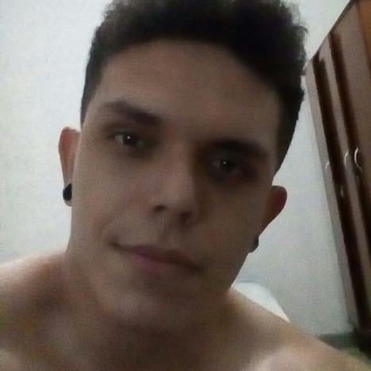

Informações |
 |
|
Me chamo Erick Pessoa, moro no centro de João Pessoa e estudo A.D.S(Análise e desenvolvimento de sistema), estudo na faculdade Mauricio de Nassau e estou no 5° período. Gosto de esportes como musculação e volei, prático de vez em quando. Gosto de estudar programação e ler livros nas horas vagas, gosto de entra no discord e conversa com alguns amigo e se possível jogar com eles. Pretendo me formar esse ano de 2021 e concorre a concurso publico. Tenho uma mãe de 70 anos e um pai que faleceu em um momento da minha minha vida muito importante, quando eu tinha 14 anos, como minha mãe se viu sozinho e a gente morava em uma casa grande de herança, a gente decidiu alugar os quarto da casa e com o dinheiro se manter até os dias atuais. A história de ninguém tem apenas história feliz e também não existe história somente com tristeza, as pessoas precisão crescer e evoluir com seu aprendizagem. Me considero uma pessoa simples, com pensamentos simples e objetivo que eu desejo conquistar aos poucos e rápido ao mesmo tempo, já que estou com uma idade um pouco avançada(26). Pretendo terminar a faculdade e focar em concurso ou até mesmo em uma pós graduação e quem sabe um doutorado. Gosto muito de ir em eventos, tanto em relação a faculdade ou evento de anime e jogos, em geral sou um cara bem eclético em relação a gosto, mas se fosse fazer um rank dos tipos de músicas que eu mais gosto, sem dúvida alguma: Rock, Rap e eletrónica estária em meu top 3 tipo de música favorito. |
|